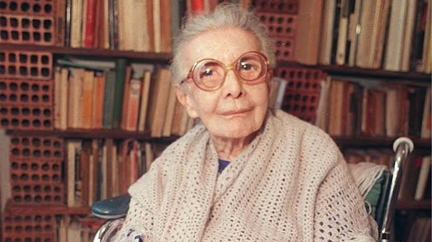

Quem foi Nise da Silveira?
Nise da Silveira foi uma médica psiquiatra brasileira que marcou a história da saúde mental no Brasil. Ela ficou conhecida por defender uma forma mais humana de tratar as pessoas e por utilizar a arte como uma forma de expressão em seu trabalho.

Nise da Silveira me inspira principalmente pela maneira como ela enxergava as pessoas. Em uma época em que tratamentos muito agressivos eram utilizados na psiquiatria, ela buscou outras formas de cuidado e valorizou a expressão, a criatividade e a individualidade de cada pessoa.
Nise também percebeu a importância dos animais no tratamento das pessoas. Ela observou que a presença de cães e gatos ajudava os pacientes a desenvolver relações de afeto e companheirismo. Por isso, passou a valorizar a convivência com os animais como parte de sua forma mais humana de cuidar dos pacientes.
Frases de Nise da Silveira
Primeira citação:
Desprezo as pessoas que se julgam superiores aos animais. Os animais tem a sabedoria da natureza. Eu gostaria de ser como o gato: quando não se quer saber de uma pessoa, levanta a cauda e sai. Não tem papo.
Segunda citação:
Para navegar contra a corrente são necessárias condições raras: espírito de aventura, coragem, perseverança e paixão.